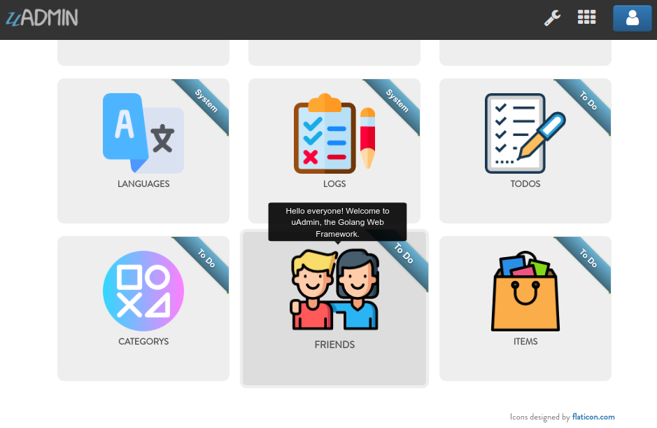
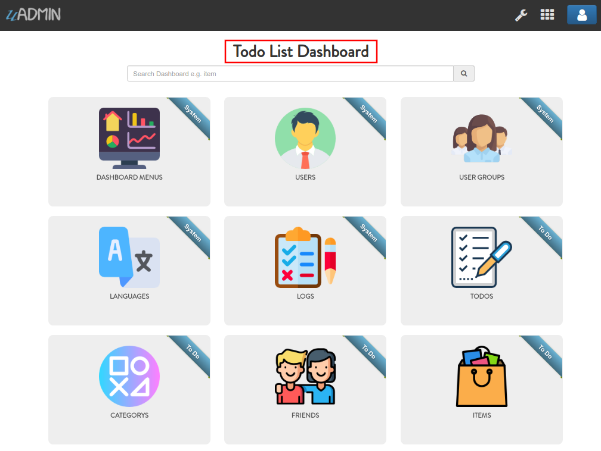

uAdmin Tutorial Part 15 - Wrapping Up Your Application¶
So far you have developed this really cool application that you want to show to your your customer or even to the world. Before you publish your application, let’s customize your dashboard in a fashionable way. Making it look good and customizing it to meet your customers requirements is important to the success of your app.
First of all, open “DASHBOARD MENUS”.

Open the models that you have created and let’s add the Tool Tip that means the information you want to show when you hover the mouse to the model, an icon that you like to represent in the dashboard, and Cat which is the highlight of your model.

By default any model that does not have an icon gets this icon:

If you don’t have any pictures or icons in your computer, I would recommend you to go over flaticon.com, but you can browse anywhere online. Once you search for an icon, download the PNG version and choose the size 128 pixels.

Result of my dashboard setup
Let’s change the title of the dashboard in general. Go to the main.go and apply the SiteName function before uadmin.Register.
func main() {
uadmin.SiteName = "Todo List" // <-- place it here
uadmin.Register(
// Some codes
)
}
Result
Once you are done with the setup, it’s about time to publish your application for the world to see. uAdmin offers FREE hosting for your app while you are developing. Before we start, you should take note the following:
You have to make sure you application is using sqlite (which is the default DB in uAdmin).
Don’t use uadmin.StartSecureServer(). You should only use uadmin.StartServer().
Don’t use this for doing anything illegal or for spam, hacking, pen-testing, DDoS … etc.
Your application + data should not exceed 1GB.
Daily bandwidth 5GB
Your application will expire in 24 hours if you didn’t publish anything new to it.
PLEASE change your admin password after you publish your application or you will be putting your app and our servers at risk.
That’s it. Open your terminal, go to your app’s folder and type:
uadmin publish
It will ask you for three fields:
Email: Your email
Sub domain: The name of the sub domain that you want your application to be published to e.g. todo will publish it to https://todo.uadmin.io. You can just press Enter and it will generate a random domain name for you.
Port: If you changed your port using uadmin.Port = X then provide the port that you used.
This way you can publish your application in less than 1 minute and give access to your client or team to see your work and give you feedback.
Result of my setup
Your project will be published to https://my-proj.uadmin.io
Enter the name of your sub-domain (my-proj) [auto]: todolist
Did you change the default port from 8080?
This is the port you have in uadmin.Port = 8080
Enter the port that your server run on [8080]: 8000
[ OK ] Compressing [420/420]
[ OK ] Your application has been uploaded
[ OK ] Application installed succesfully
[ OK ] Your Project has been published to https://todolist.uadmin.io/
You can also update your application by using the same command.
uadmin publish
Result of my setup
[ OK ] Compressing [420/420]
[ OK ] Your application has been uploaded
[ OK ] Application installed succesfully
[ OK ] Your Project has been published to https://todolist.uadmin.io/
Notice that the second time you publish the same application it does that much faster. It only takes a few seconds the second time and it does not ask for any information about your app anymore. Every time you publish your app again, your app’s expiry is reset for 24 hours from your last publish.
Your application is now live, you can access it using the URL you have at the end of uadmin publish output. We made sure you have SSL to protect your traffic to your app.

You will now notice that you have a new file in your app’s folder .uproj which contains some information about your app.
{"domain":"todolist","port":"8000","uid":"otPN7LxQ5Kh3bP6V_JnmVVoP"}
Congrats, now you know how to do the following in the entire series:
Preparing uAdmin files in the project folder
Build an application from scratch
Creating external models
Crop an image
Using Register Inlines
Adding a drop down list to the field manually
Applying different uAdmin tags
Using M2M (Many-to-many) for multiselection feature
Functional back-end validation
API setup and configuration
HTML Template concepts
Access an HTML file
Migration of data
Generate a self-signed SSL certificate
Implementing two factor authentication (2FA)
Reset your password by email
Hash salt
Encrypt your database
Change the dashboard title
Customize your dashboard
Publish your application online
If you want to learn more and discover about the concepts of uAdmin, you may go to these references with examples: